<!DOCTYPE html>

<html lang="en-us">
    <head>
    <meta charset="utf-8">
    <meta http-equiv="X-UA-Compatible" content="IE=edge,chrome=1">
    <meta name="viewport" content="width=device-width, initial-scale=1">
    <meta name="format-detection" content="telephone=no"/>

    <title>Getting start(4) : クロックおよびペリフェラル設定ツールの使い方 | mimxrt_docs</title>
    
    <link rel="apple-touch-icon" sizes="180x180" href="/mimxrt_docs/apple-touch-icon.png">
    <link rel="icon" type="image/png" sizes="32x32" href="/mimxrt_docs/favicon-32x32.png">
    <link rel="icon" type="image/png" sizes="16x16" href="/mimxrt_docs/favicon-16x16.png">
    <link rel="manifest" href="/mimxrt_docs/manifest.json">
    <link rel="mask-icon" href="/mimxrt_docs/safari-pinned-tab.svg" color="#FF3DB4">
    <meta name="theme-color" content="#ffffff">

    
    
    
    <link rel="stylesheet" href="https://takeshionagawa.github.io/mimxrt_docs/css/main.min.3d7b8d516fca9eae3aea72ddeb4c2e2134532361e88642f5b14aa9d381761e00.css"/>

    
    
    

    
    
 
    </head>

    <body>
        
<nav>
  <header>
    <div class="site-title">
        <a href="/mimxrt_docs/">mimxrt_docs</a>
    </div>  
</header>

  <div class="nav-menu">
  
    <a class="color-link nav-link" href="/mimxrt_docs/about/">About</a>
  
    <a class="color-link nav-link" href="/mimxrt_docs/tags/">Tags</a>
  
    <a class="color-link nav-link" href="/mimxrt_docs/archives/">Archives</a>
  
  <a class="color-link nav-link" href="https://takeshionagawa.github.io/mimxrt_docs/index.xml" target="_blank" rel="noopener" type="application/rss+xml">RSS</a>
</div>
<footer class="footer">
	<div class="social-icons">
        

    

    
    <a class="social-icon" href="https://twitter.com/onagawadosu" target="_blank" rel="noopener" title="Twitter">
        <svg width="28px" height="28px" viewBox="0 0 28 28" version="1.1" fill="#ABABAB" xmlns="https://www.w3.org/2000/svg" xmlns:xlink="https://www.w3.org/1999/xlink">
            <path d="M8.991284,24.971612 C19.180436,24.971612 24.752372,16.530224 24.752372,9.210524 C24.752372,8.970656 24.747512,8.731868 24.736496,8.494376 C25.818008,7.712564 26.758256,6.737 27.5,5.62622 C26.507372,6.067076 25.439252,6.364292 24.318752,6.498212 C25.462472,5.812628 26.340512,4.727444 26.754584,3.434036 C25.684088,4.068536 24.499004,4.53002 23.23724,4.778528 C22.226468,3.701876 20.786828,3.028388 19.193828,3.028388 C16.134404,3.028388 13.653536,5.509256 13.653536,8.567492 C13.653536,9.0023 13.702244,9.424904 13.797176,9.830552 C9.19346,9.599108 5.11106,7.39472 2.3792,4.04294 C1.903028,4.861364 1.629032,5.812628 1.629032,6.827072 C1.629032,8.74904 2.606972,10.445612 4.094024,11.438132 C3.185528,11.41016 2.331788,11.160464 1.585184,10.745096 C1.583888,10.768208 1.583888,10.791428 1.583888,10.815728 C1.583888,13.49888 3.493652,15.738584 6.028088,16.246508 C5.562932,16.373084 5.07326,16.44134 4.56782,16.44134 C4.210988,16.44134 3.863876,16.406024 3.526484,16.34144 C4.231724,18.542264 6.276596,20.143796 8.701412,20.18894 C6.805148,21.674696 4.416836,22.56008 1.821488,22.56008 C1.374476,22.56008 0.93362,22.534592 0.5,22.4834 C2.951708,24.054476 5.862524,24.971612 8.991284,24.971612"></path>
        </svg>
    </a>
    

    

    

    

    

    

    

    

    

    

    

    

    

    

    

    

    
    
    
    <a class="social-icon" href="https://github.com/TakeshiOnagawa" target="_blank" rel="noopener" title="GitHub">
        <svg width="28px" height="28px" viewBox="0 0 28 28" version="1.1" fill="#ABABAB" xmlns="https://www.w3.org/2000/svg" xmlns:xlink="https://www.w3.org/1999/xlink">
            <path d="M13.9988029,1.32087331 C6.82105037,1.32087331 1,7.14112562 1,14.3212723 C1,20.0649109 4.72454649,24.9370678 9.89038951,26.6560892 C10.5408085,26.7757983 10.7778323,26.374374 10.7778323,26.0296121 C10.7778323,25.7215609 10.7666595,24.9035493 10.760275,23.8189856 C7.14426471,24.6042767 6.38131925,22.0760223 6.38131925,22.0760223 C5.78995672,20.5740732 4.93762853,20.1742451 4.93762853,20.1742451 C3.75729765,19.3682044 5.02701126,19.3841656 5.02701126,19.3841656 C6.33183953,19.4759425 7.01817121,20.7241085 7.01817121,20.7241085 C8.17775254,22.7104801 10.0611744,22.1366749 10.8017741,21.8038838 C10.919887,20.9643246 11.2558703,20.3913175 11.6269683,20.066507 C8.74038491,19.7385043 5.70536235,18.6228163 5.70536235,13.6413251 C5.70536235,12.2223743 6.21213051,11.0611968 7.04370914,10.1530044 C6.90963504,9.82420367 6.46351945,8.50181809 7.17139875,6.71256734 C7.17139875,6.71256734 8.26234691,6.36301702 10.7459099,8.04532771 C11.78259,7.75642995 12.8950858,7.61277914 14.000399,7.60719272 C15.1049142,7.61277914 16.2166119,7.75642995 17.2548881,8.04532771 C19.736855,6.36301702 20.8262071,6.71256734 20.8262071,6.71256734 C21.5356825,8.50181809 21.0895669,9.82420367 20.9562909,10.1530044 C21.7894656,11.0611968 22.2922435,12.2223743 22.2922435,13.6413251 C22.2922435,18.6355852 19.2524325,19.734514 16.3570705,20.0561322 C16.8231376,20.4575564 17.2389269,21.2508282 17.2389269,22.4638795 C17.2389269,24.2012564 17.2229657,25.603448 17.2229657,26.0296121 C17.2229657,26.3775663 17.4575954,26.7821827 18.116793,26.6552912 C23.2786458,24.9322794 27,20.0633148 27,14.3212723 C27,7.14112562 21.1789496,1.32087331 13.9988029,1.32087331"></path>
        </svg>
    </a>
    

    
    
    

    

    

    

    

    

</div>


	<p><a href="https://github.com/kimcc/hugo-theme-noteworthy" target="_blank" rel="noopener">Noteworthy theme</a></p>
	<p><a href="https://gohugo.io" target="_blank" rel="noopener">Built with Hugo</a></p>

	<script src="https://takeshionagawa.github.io/mimxrt_docs/js/main.min.fa5c2b23e07b5d9bfad267a52b4b24fdb053e6fb7524993383594926a3ac270c.js" integrity="sha256-+lwrI+B7XZv60melK0sk/bBT5vt1JJkzg1lJJqOsJww=" crossorigin="anonymous"></script>
</footer>
</nav>

        <div id="content" class="content-container">
        

<h1 class="post-title">Getting start(4) : クロックおよびペリフェラル設定ツールの使い方</h1>
    
    <time>June 3, 2020</time>
    
    <div>
        <p>
        <p>この記事は、Getting started with i.MXRT microcontroller (3)の続きです。</p>
<p>前回までで新規プロジェクトからLチカプログラムを作成しました。<br>
ここで今まで学習したIDEの機能と未学習の機能を整理したいと思います。</p>
<ul>
<li><font color="MediumBlue">Import SDK example機能</font></li>
<li><font color="MediumBlue">New project機能</font></li>
<li><font color="MediumBlue">MCUXpresso Config Tools Pins</font></li>
<li>MCUXpresso Config Tools Clocks</li>
<li>MCUXpresso Config Tools Peripherals</li>
</ul>
<p>青色で示した部分が学習済みの機能で以下2つはまだ学習していない機能です。<br>
今回は下2つのClocks,Peripheralsの2つを学習するために内蔵ペリフェラルの一つであるPIT(Periodic Interrupt Timer)を使ったLチカをやってみようと思います。</p>
<p>今回PITを選んだ理由は、クロックおよび、ペリフェラルの設定が必須であるが比較的容易に扱えるので、ツール学習に支障をきたさないだろうと考えたためです。</p>
<p>では、本題に入りましょう。</p>
<h1 id="新規作成と前回の復習">新規作成と前回の復習</h1>
<p>新規プロジェクトを作成します。</p>
<p>Configure the projectのウインドウで、<font color="Crimson">pitのドライバにチェックを入れます。</font>
<figure class="center">
    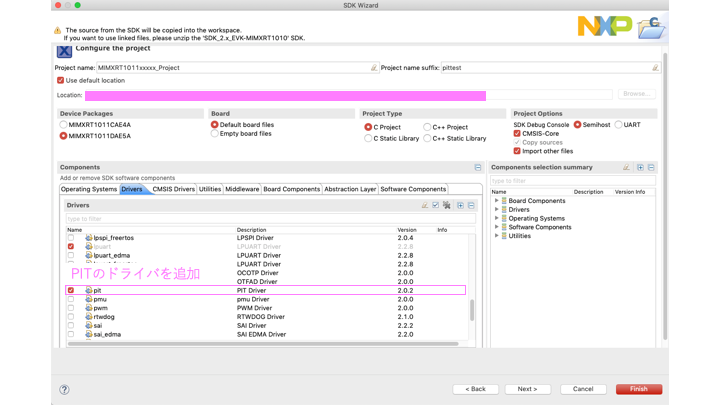 
</figure>

次のAdvanced project settingsは何もいじらずFinishをクリックします。<br>
プロジェクトが生成されたら、前回同様にLEDがつながっているGPIO_11の設定をしてください。<br>
その後ビルドを行いエラーがないことを確認します。</p>
<h1 id="クロックの設定">クロックの設定</h1>
<p>次にPITのクロックを設定していきます。<br>
ここで初めてクロック設定ツールが出てきます。<br>
クロックツールの開き方はPinsツール同様にIDE右上のアイコンから行います。</p>
<figure class="center">
    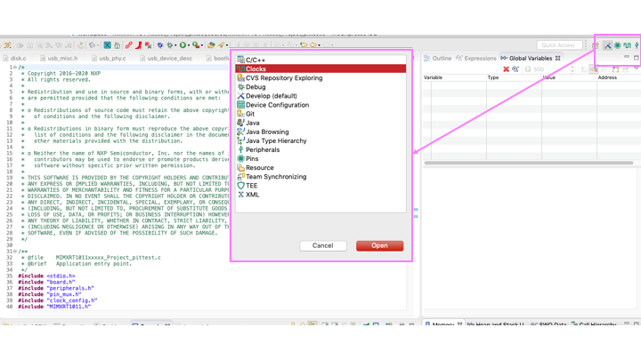 
</figure>

<p>クロックツールを開くと複雑な画面構成となっているため解説を入れます。</p>
<figure class="center">
    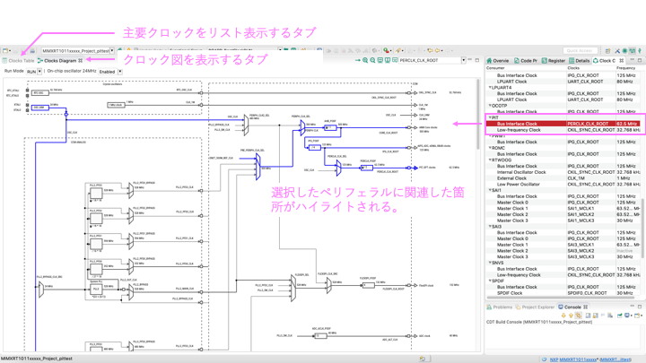 
</figure>

<p>多くのタブがありますが、主に使用するのは画像に表示している物が多いです。<br>
基本的には設定したいクロックを右のClock Consumerタブで選択しハイライトされる部分をいじってクロックを設定します。</p>
<p>ここではPITクロックを<font color="Crimson">12.5MHz</font>に設定してみることにします。
設定方法についてですが、二種類ほどあります。</p>
<details><summary><font color="MediumBlue">設定方法(1):クロック図上で行こなう方法</font></summary><div>
この方法はクロック図を直接クリックして設定していく方法です。
<p>各分周器をクリックすることでGUI上で設定を行うことができます。
<figure class="center">
    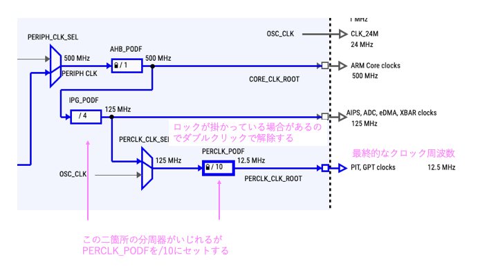 
</figure>
</p>
<p>右クリックで設定画面を出すこともできます。
<figure class="center">
    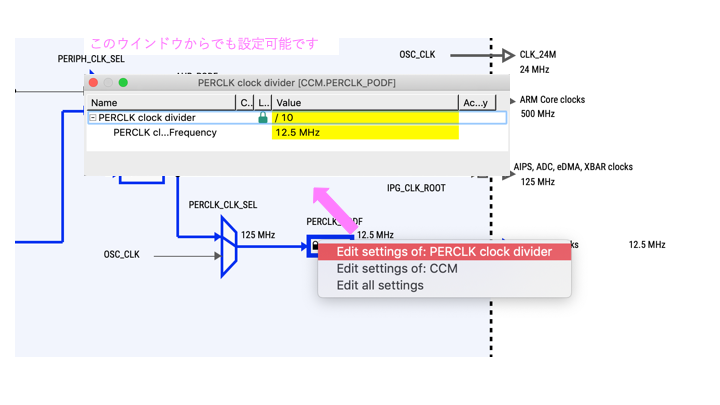 
</figure>
</p>
<p>目的クロックを直接入力して設定させることもできますが、LOCKされてない分周器は値が変わってしまうので注意してください。</p>
<figure class="center">
    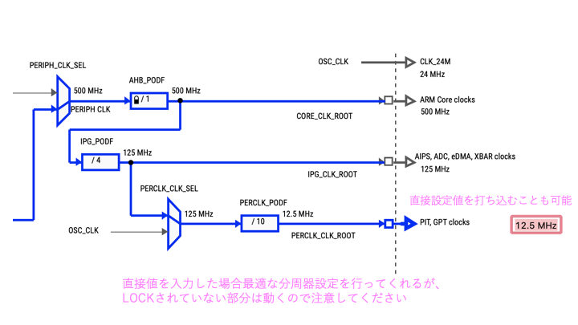 
</figure>

<p>設定値を満たせない場合エラーが出るのでこの方法はあまり使わないほうが無難です。</p>
</div></details>
<details><summary><font color="MediumBlue">設定方法(2):Detailsタブより行う方法</font></summary><div>
次にDetailsタブより設定する方法です。  
クロック図側でPITをクリックしハイライトさせた上でDetailsタブを確認すると該当部分が黄色く強調されるのでその部分を設定します。
<figure class="center">
    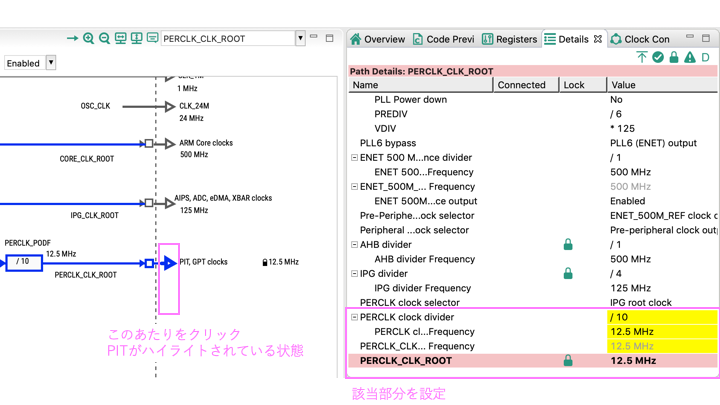 
</figure>

</div></details>
<p>以上の例では、12.5MHzにクロックを設定していますが、この部分はどんなクロックに設定してもOKです。<br>
クロックを早くすれば1カウントあたりの時間が短くなるので時間分解能が上がります。
逆に長いインターバルを作成したければクロックを下げればいいです。</p>
<h1 id="ペリフェラルの設定">ペリフェラルの設定</h1>
<p>次にペリフェラルの設定を行います。<br>
ペリフェラルツールはピンツール、クロックツール同様に右上のアイコンから開くことが可能です。</p>
<p>ペリフェラルウィンドウが表示されましたら左のペリフェラルタブよりPITを選択します。<br>
その後PITの上をダブルクリックするか、右クリックでOpenするとPITの設定画面が表示されます。</p>
<figure class="center">
    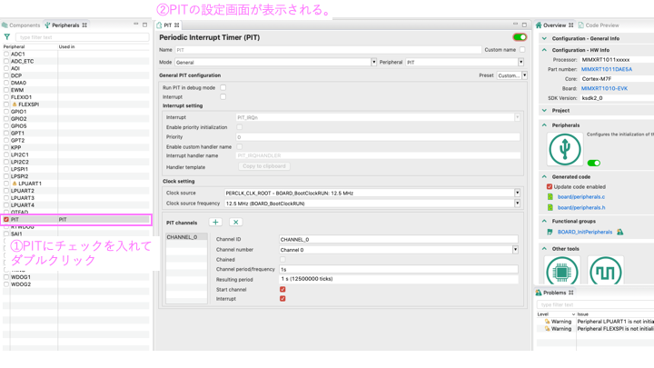 
</figure>

<p>PITの設定が画面が表示されたと思うので実際に設定をしていきます。</p>
<figure class="center">
    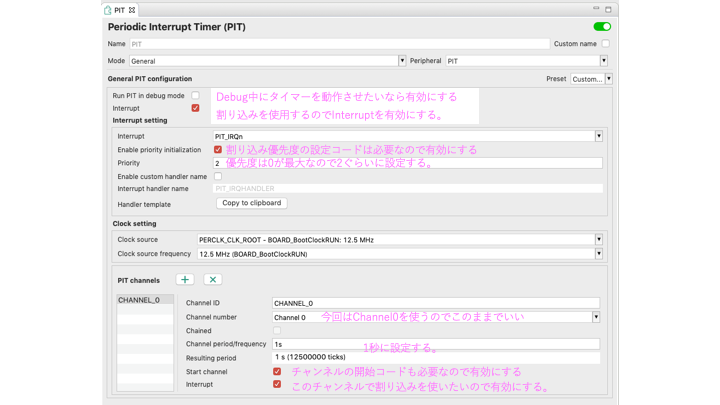 
</figure>

<p>設定する項目は、主に以下の2つになります。</p>
<ul>
<li>割り込み有効化</li>
<li>channel period/frequency</li>
</ul>
<p>詳しい設定は画像を参考にしながら行ってください。</p>
<p>以上でPITの設定は終了なので上部メニューのupdate codeをクリックしてコードを出力してください。<br>
このように目的の値を設定するだけでレジスタ設定のコードを出力してくれるので時間をかけることなく開発をすすめることができます。</p>
<details><summary><font color="MediumBlue">割り込みについて</font></summary><div>
<p>途中で割り込みという言葉が出てきますが、話が脱線してしまうのでここでは解説しません。<br>
気になる方のために参考文献に<a href="#link1">とても良い資料(割り込みとポーリング)</a>があったので貼っておきます。</p>
</div></details>
<h1 id="lチカのためのコードを書く">Lチカのためのコードを書く</h1>
<p>最後にコードを書いていきます。<br>
ほとんどのコードをツールが出力してくれたので私達が書かないといけないのは割り込みが発生したときにどういった動作をするか？という部分だけです。</p>
<p>まず先程のペリフェラルツールの画面に戻り、Handler templateにあるボタンをクリックします。</p>
<figure class="center">
    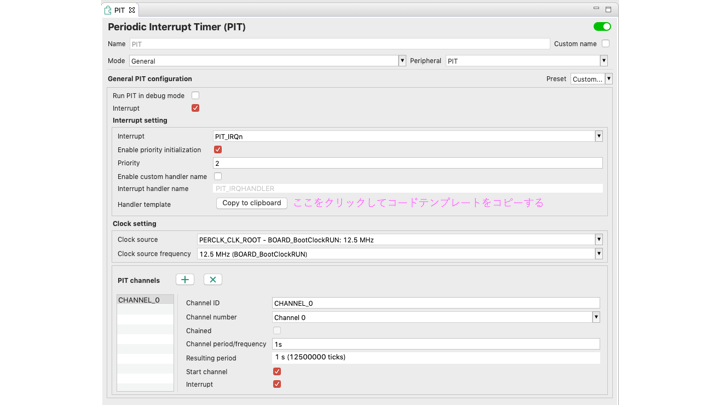 
</figure>

<p>ここでHandlerという言葉が初めて出てきます。<br>
ARMマイコンでは割り込みが発生するとhandlerと呼ばれるルーチンに飛びます。<br>
handlerの名称はメーカーのSDKごとに異なっておりNXPのPITではPIT_IRQHANDLERという名前で定義されています。</p>
<p>今回はLチカを行いたいので、Handler内ではGPIOの反転動作と割り込みのクリアを行います。<br>
割り込みのクリアは割り込みが発生するとフラグが立つことから、それをクリア状態にするため絶対に必要です。</p>
<p>実際の記述例を示します。</p>
<div class="highlight"><pre style="background-color:#f0f3f3;-moz-tab-size:4;-o-tab-size:4;tab-size:4"><code class="language-c++" data-lang="c++"><span style="color:#09f;font-style:italic">/* PIT_IRQn interrupt handler */</span>
<span style="color:#078;font-weight:bold">void</span> <span style="color:#c0f">PIT_IRQHANDLER</span>(<span style="color:#078;font-weight:bold">void</span>) {
	<span style="color:#09f;font-style:italic">/*  Place your code here */</span>
	<span style="color:#09f;font-style:italic">/* Add for ARM errata 838869, affects Cortex-M4, Cortex-M4F
</span><span style="color:#09f;font-style:italic">		Store immediate overlapping exception return operation might vector to incorrect interrupt. */</span>
	<span style="color:#09f;font-style:italic">/*ユーザーコードはここに書く*/</span>
	GPIO_PortToggle(GPIO1, <span style="color:#f60">1U</span><span style="color:#555">&lt;&lt;</span><span style="color:#f60">11</span>); <span style="color:#09f;font-style:italic">//GPIO_11を反転
</span><span style="color:#09f;font-style:italic"></span>	PIT_ClearStatusFlags(PIT_PERIPHERAL, PIT_CHANNEL_0, kPIT_TimerFlag);
	<span style="color:#099">#if defined __CORTEX_M &amp;&amp; (__CORTEX_M == 4U)
</span><span style="color:#099"></span>	__DSB();
	<span style="color:#099">#endif
</span><span style="color:#099"></span>}
</code></pre></div><p>GPIOの操作に関しては、反転を行うAPIで該当bitを反転させています。
PIT_ClearStatusFlagsは、割り込みのフラグ解除を行うAPIです。<br>
前2つの引数はperipherals.hでマクロ定義されているもので、自分が使うチャンネルに応じて書きます。<br>
3つ目の引数は、どのフラグをクリアするのかを設定します。<br>
PITの場合kPIT_TimerFlag以外の選択肢がないので上記のように記述すればよいです。
割り込みの条件が複数あるようなペリフェラルの場合は該当する動作のフラグをクリアにする必要があります。</p>
<p>以上でコードの定義が終わりです。</p>
<h1 id="実行してみる">実行してみる</h1>
<p>コードの記述まで終わったのでビルドを行いエラーがないことを確認します。<br>
ビルドが無事に通ったらデバッガを起動して割り込みがきちんと動作しているか確認します。
<figure class="center">
    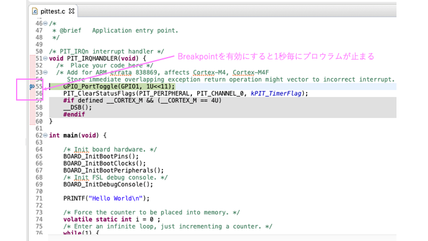 
</figure>
</p>
<p>ハンドラー内でブレークポイントを有効にすると、1秒毎にプログラムが停止すると思います。</p>
<h1 id="refa-namelink1a">Ref<a name="link1"></a></h1>
<ul>
<li><a href="https://gsmcustomeffects.hatenablog.com/entry/2018/02/06/000117">MIMXRT10xx Periodic Interrupt Timer(基礎編)</a></li>
<li><a href="https://gsmcustomeffects.hatenablog.com/entry/2018/02/10/002550">MIMXRT10xx Periodic Interrupt Timer(タイマーのチェイン)</a></li>
<li><a href="https://www.uquest.co.jp/embedded/learning/lecture02.html">割り込みとポーリング</a></li>
</ul>
        </p>
    </div>
    

    

    <div class="page-footer">
        
        <hr class="footer-divider">
        
            <a class="tag" href="/tags/rt1010">#RT1010</a>
        
      
    </div>


        

<link rel="stylesheet" type="text/css" href="/mimxrt_docs/css/katex.min.css" crossorigin="anonymous">
<script type="text/javascript" src="/mimxrt_docs/js/katex.min.js" crossorigin="anonymous"></script>
<script type="text/javascript" src="/mimxrt_docs/js/auto-render.min.js"onload="renderMathInElement(document.body);" crossorigin="anonymous"></script>

        </div>
        <footer class="footer-mobile">
	<div class="social-icons">
        

    

    
    <a class="social-icon" href="https://twitter.com/onagawadosu" target="_blank" rel="noopener" title="Twitter">
        <svg width="28px" height="28px" viewBox="0 0 28 28" version="1.1" fill="#ABABAB" xmlns="https://www.w3.org/2000/svg" xmlns:xlink="https://www.w3.org/1999/xlink">
            <path d="M8.991284,24.971612 C19.180436,24.971612 24.752372,16.530224 24.752372,9.210524 C24.752372,8.970656 24.747512,8.731868 24.736496,8.494376 C25.818008,7.712564 26.758256,6.737 27.5,5.62622 C26.507372,6.067076 25.439252,6.364292 24.318752,6.498212 C25.462472,5.812628 26.340512,4.727444 26.754584,3.434036 C25.684088,4.068536 24.499004,4.53002 23.23724,4.778528 C22.226468,3.701876 20.786828,3.028388 19.193828,3.028388 C16.134404,3.028388 13.653536,5.509256 13.653536,8.567492 C13.653536,9.0023 13.702244,9.424904 13.797176,9.830552 C9.19346,9.599108 5.11106,7.39472 2.3792,4.04294 C1.903028,4.861364 1.629032,5.812628 1.629032,6.827072 C1.629032,8.74904 2.606972,10.445612 4.094024,11.438132 C3.185528,11.41016 2.331788,11.160464 1.585184,10.745096 C1.583888,10.768208 1.583888,10.791428 1.583888,10.815728 C1.583888,13.49888 3.493652,15.738584 6.028088,16.246508 C5.562932,16.373084 5.07326,16.44134 4.56782,16.44134 C4.210988,16.44134 3.863876,16.406024 3.526484,16.34144 C4.231724,18.542264 6.276596,20.143796 8.701412,20.18894 C6.805148,21.674696 4.416836,22.56008 1.821488,22.56008 C1.374476,22.56008 0.93362,22.534592 0.5,22.4834 C2.951708,24.054476 5.862524,24.971612 8.991284,24.971612"></path>
        </svg>
    </a>
    

    

    

    

    

    

    

    

    

    

    

    

    

    

    

    

    
    
    
    <a class="social-icon" href="https://github.com/TakeshiOnagawa" target="_blank" rel="noopener" title="GitHub">
        <svg width="28px" height="28px" viewBox="0 0 28 28" version="1.1" fill="#ABABAB" xmlns="https://www.w3.org/2000/svg" xmlns:xlink="https://www.w3.org/1999/xlink">
            <path d="M13.9988029,1.32087331 C6.82105037,1.32087331 1,7.14112562 1,14.3212723 C1,20.0649109 4.72454649,24.9370678 9.89038951,26.6560892 C10.5408085,26.7757983 10.7778323,26.374374 10.7778323,26.0296121 C10.7778323,25.7215609 10.7666595,24.9035493 10.760275,23.8189856 C7.14426471,24.6042767 6.38131925,22.0760223 6.38131925,22.0760223 C5.78995672,20.5740732 4.93762853,20.1742451 4.93762853,20.1742451 C3.75729765,19.3682044 5.02701126,19.3841656 5.02701126,19.3841656 C6.33183953,19.4759425 7.01817121,20.7241085 7.01817121,20.7241085 C8.17775254,22.7104801 10.0611744,22.1366749 10.8017741,21.8038838 C10.919887,20.9643246 11.2558703,20.3913175 11.6269683,20.066507 C8.74038491,19.7385043 5.70536235,18.6228163 5.70536235,13.6413251 C5.70536235,12.2223743 6.21213051,11.0611968 7.04370914,10.1530044 C6.90963504,9.82420367 6.46351945,8.50181809 7.17139875,6.71256734 C7.17139875,6.71256734 8.26234691,6.36301702 10.7459099,8.04532771 C11.78259,7.75642995 12.8950858,7.61277914 14.000399,7.60719272 C15.1049142,7.61277914 16.2166119,7.75642995 17.2548881,8.04532771 C19.736855,6.36301702 20.8262071,6.71256734 20.8262071,6.71256734 C21.5356825,8.50181809 21.0895669,9.82420367 20.9562909,10.1530044 C21.7894656,11.0611968 22.2922435,12.2223743 22.2922435,13.6413251 C22.2922435,18.6355852 19.2524325,19.734514 16.3570705,20.0561322 C16.8231376,20.4575564 17.2389269,21.2508282 17.2389269,22.4638795 C17.2389269,24.2012564 17.2229657,25.603448 17.2229657,26.0296121 C17.2229657,26.3775663 17.4575954,26.7821827 18.116793,26.6552912 C23.2786458,24.9322794 27,20.0633148 27,14.3212723 C27,7.14112562 21.1789496,1.32087331 13.9988029,1.32087331"></path>
        </svg>
    </a>
    

    
    
    

    

    

    

    

    

</div>


	<div class="footer-mobile-links">
		<p><a href="https://github.com/kimcc/hugo-theme-noteworthy" target="_blank" rel="noopener">Noteworthy theme</a></p>
		<span class="divider-bar">|</span>
		<p><a href="https://gohugo.io" target="_blank" rel="noopener">Built with Hugo</a></p>
	</div>

	<script src="https://takeshionagawa.github.io/mimxrt_docs/js/main.min.fa5c2b23e07b5d9bfad267a52b4b24fdb053e6fb7524993383594926a3ac270c.js" integrity="sha256-+lwrI+B7XZv60melK0sk/bBT5vt1JJkzg1lJJqOsJww=" crossorigin="anonymous"></script>
</footer>
    </body>
</html>